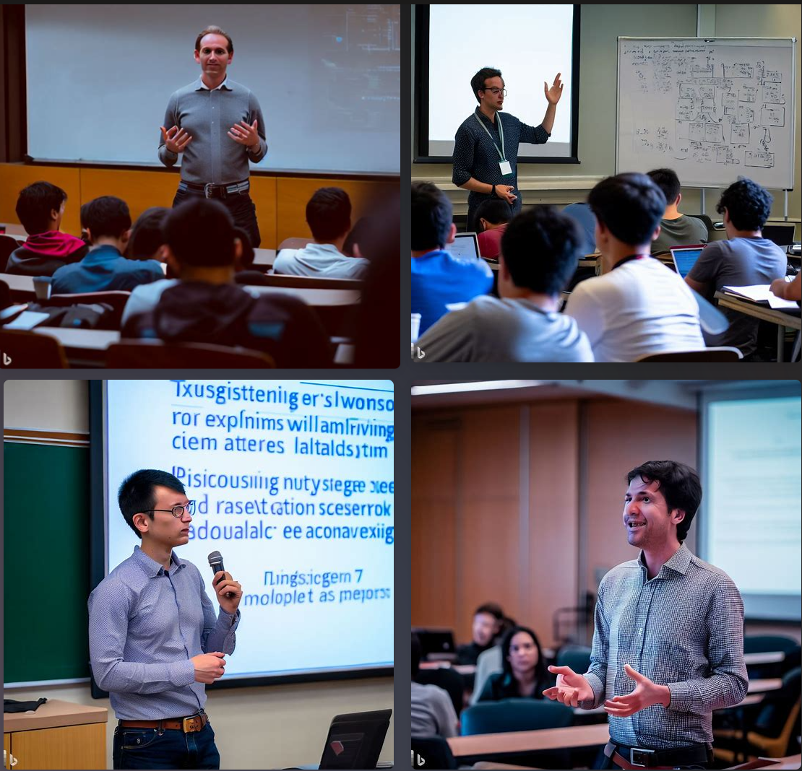
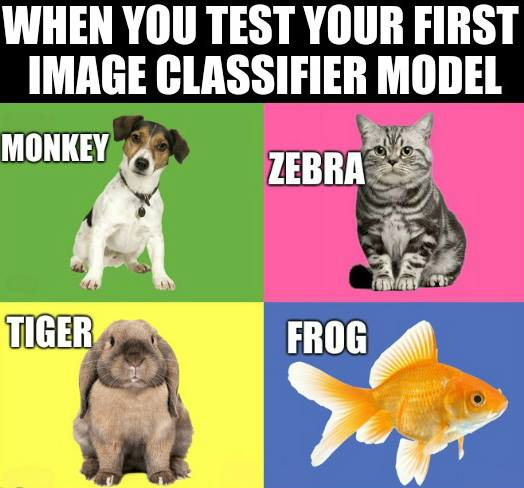

Introduction to Machine Learning
https://ubc-library-rc.github.io/intro-machine-learning/
Introduction to concepts, techniques, and tools
Types of machine learning: supervised, unsupervised
Algorithms: Regression, Classification, clustering, and neural networks
Steps to build a machine learning model
Reasons to attend the workshop: to know the capabilites of the tool to use in your work, to learn the effect of the tool
on your workflow
preworkshop setup: jupyter, python, I expect most participants have no background in python and do not want to teach python in this workshop
Learning Objectives
Schedule
Land Acknowledgement
UBC Vancouver is located on the traditional, ancestral, and unceded territory of the xʷməθkʷəy̓əm (Musqueam) peoples.
Use the Zoom toolbar to engage
Participants window
Active participation makes the session so much fun and gives me and your peers much more energy. We are
all sitting in our offices with little sound. Your voices and perspectives enlivens the session. We encourage
you to engage with each other and instructors.
The participants window lists everyone in the session and click the icons at the bottom to communicate with
the instructors.
You can also use the Chat windows to comment or ask questions at any time. It is also a good place to share
problems with your audio connection.
Learning Objectives
Define Machine Learning and recall the types of Machine Learning
Compare methods and techniques of Machine Learning
Identify appropriate methods for different use cases
Think about the ethical implications of using Machine Learning
So, to touch various viewpoints of machine learning, we have the following learning objectives for this workshop:
Pre-workshop setup
For hands-on exercises, we will use [Python](https://www.python.org/) on [Jupyter Notebooks](https://jupyter.org/). You don’t need to have Python installed. Please make sure that you have a [UBC Syzygy](https://ubc.syzygy.ca/) or a [Google Colaboratory](https://colab.research.google.com/) account. (You will need a CWL login to access Syzygy.)
hands-on exercises, programming tools and libraries, such as [Python] and [scikit-learn] prior familiarity with Python programming is recommended, we do not study the codes in detail
What is Machine Learning
field of computer science, teaching computers to learn from data, without explicitly defining the rules applicable to the problem.
algorithms or mathematical models trained large datasets to recognize pattern
What is Machine Learning
original comic by sandserif
Introduction to Machine Learning workshop at the University of British Columbia

From DALL.E
machine learning has many practical application in language processing, fraud detection, healthcare, finance and ...
To kick things off, lets share one example of how you think machine learning is currently being used in everyday life or in your industry. What do you fine-tuned
fascinating about it?
predicting the remaining servie life of infrastructure assets based on the inspection reports, environmental conditions and much more.
Building a Machine Learning Model
- **Data Collection:**: gathering and preparing data, he quality of the data used in the model directly impacts its accuracy and effectiveness
- **Data Preprocessing:** cleaned, transformed, and formatted into a suitable format
- **Model Training:** Once the data is ready, it is used to train a machine learning model.
- **Model Evaluation:** After the model has been trained, it needs to be evaluated to ensure that it is performing accurately. This is done using a test set of data that was not used during the training process.
- **Model Deployment:** Once the model has been trained and evaluated, it can be deployed for use in a production environment. This involves integrating the model into a larger system and ensuring that it can handle real-world data. This step involves choosing a suitable employment platform.
- **Model Improvement:** Machine learning is an iterative process, so the model may need to be improved over time. This can involve retraining or fine-tuning its parametersthe with new data or continues stream of data.
Comparing to Classic Science
Data-driven vs theory-driven
Interpretability vs. black box
Iterative vs linear
Human-designed features vs automated feature extraction
Bias vs objectivity
So whats the difference of machine learning models to mathematical models built based on classic science
- **Data-driven vs theory-driven: it starts with a hypothesis or theory and then tests it using experiments.
- Interpretability vs. black box: Classic science often emphasizes interpretability, where researchers aim to understand and explain the underlying mechanisms and principles governing a phenomenon. In machine learning, some algorithms, such as decision trees, are interpretable, but many ML algorithms, such as deep neural networks, are considered black boxes, as their inner workings can be complex and difficult to interpret.
- Iterative vs linear: Machine learning is an iterative process, which means that it learns from its mistakes and improves over time. Classic science is often a linear process, with a clear start and end point.
- - Human-designed features vs automated feature extraction: In classic science, researchers often manually design features, which are specific attributes or characteristics of the data, to be used in their analyses. In machine learning, features are typically automatically extracted from the data during the training process, without explicit human design.
- Bias vs objectivity: Machine learning algorithms can be biased if they are trained on biased data or if they contain biases built into their design. Classic science strives for objectivity and uses rigorous methods to minimize bias.
What other differences
Types of Machine Learning
From javatpoint
There are different types of machine learning, including supervised learning, unsupervised learning, and reinforcement learning, each with its own set of algorithms and techniques.
* Supervised Learning:
an algorithm is trained on a labeled dataset, meaning that the dataset has input features (X) and corresponding output labels (Y). The goal of supervised learning is to learn a function that maps the input features to the output labels. Once the model is trained, it can be used to make predictions on new data. Examples of supervised learning tasks include image classification, speech recognition, and regression analysis.
* Unsupervised Learning:
Unsupervised learning is a type of machine learning where the algorithm is trained on an unlabeled dataset, meaning that there are no output labels (Y) associated with the input features (X). The goal of unsupervised learning is to learn patterns and structure in the data without the help of a labeled dataset. Examples of unsupervised learning tasks include clustering, anomaly detection, and dimensionality reduction.
* Reinforcement Learning:
Reinforcement learning is a type of machine learning that involves an agent interacting with an environment to learn how to make decisions that maximize a reward. The agent receives feedback from the environment in the form of rewards or penalties, and its goal is to learn a policy that maximizes the expected long-term reward. Reinforcement learning is often used in robotics, game playing, and control systems.
* Transfer Learning:
Transfer learning refers to a technique in which a pre-trained model, typically trained on a large dataset, is used as a starting point for training a new model on a smaller dataset or a different but related task. The idea is that the knowledge learned from the pre-trained model can be transferred to the new task, allowing the new model to start with some level of knowledge or "transfer" from the previous task, which can potentially improve its performance and reduce the amount of training data required.
Predictors and Classifiers

A predictor is an algorithm that takes in a set of input variables and produces an output variable. The goal of a predictor is to learn a mathematical function that maps the input variables to the output variable. For example, a predictor might take in information about a house, such as its size, location, and number of bedrooms, and predict its price.
A classifier, on the other hand, is an algorithm that takes in input data and assigns it to one of several pre-defined classes or categories. The goal of a classifier is to learn a decision boundary that separates the input data into these classes. For example, a classifier might take in an image and classify it as a dog or a cat.
There are many types of predictors and classifiers, each with its own set of algorithms and techniques. Some examples of predictors include linear regression, decision trees, and neural networks. Some examples of classifiers include logistic regression, support vector machines, and k-nearest neighbors.
The choice between using a predictor or classifier depends on the nature of the problem at hand. If the goal is to predict a continuous variable, such as price, a predictor is typically used. If the goal is to classify data into discrete categories, such as whether an image is of a dog or a cat, a classifier is typically used.
AI & Machine Learning
Artificial intelligence (AI) and machine learning (ML) are related but distinct fields of study.
AI is a broad field that encompasses the study of creating intelligent machines that can perform tasks that typically require human intelligence, such as natural language processing, computer vision, and decision-making. AI includes both rule-based systems that are programmed explicitly and machine learning-based systems that learn from data.
Machine learning, on the other hand, is a subset of AI that focuses specifically on developing algorithms that can learn patterns in data and make predictions or decisions based on that data. In other words, machine learning is a way of achieving AI by enabling computers to learn from data without being explicitly programmed.
One way to think about the relationship between AI and ML is that machine learning is a technique used within the broader field of AI. Machine learning is a powerful tool for building intelligent systems because it can learn from large amounts of data, improve its performance over time, and generalize to new data.
Self driving cars
Self-driving Cars: One of the most exciting and transformative applications of machine learning is in the field of self-driving cars. Self-driving cars use sensors such as cameras, LIDAR, and radar to gather information about their surroundings, and machine learning algorithms are used to process this information and make decisions in real-time. These algorithms can identify obstacles, pedestrians, and other vehicles on the road and make decisions such as changing lanes, braking, or accelerating. Self-driving cars have the potential to reduce accidents, improve traffic flow, and provide mobility to people who cannot drive, such as the elderly and disabled.
Medical Diagnosis
Medical Diagnosis: Machine learning is also being used to improve medical diagnosis and treatment. For example, machine learning algorithms can analyze medical images such as X-rays, MRIs, and CT scans to identify patterns and anomalies that may indicate a particular disease or condition. This can help physicians make more accurate diagnoses and develop personalized treatment plans. Machine learning can also be used to analyze electronic health records and other health data to identify risk factors for certain diseases and develop preventive strategies.
Natural Language Processing
Natural Language Processing: Natural language processing (NLP) is another fascinating application of machine learning. NLP algorithms can analyze and understand human language, which has the potential to revolutionize communication and interaction between humans and machines. NLP is used in various applications such as chatbots, voice assistants, and language translation. For example, chatbots can use NLP algorithms to understand customer inquiries and provide responses in natural language. Voice assistants such as Siri and Alexa use NLP algorithms to understand and respond to voice commands. Machine learning-based language translation tools can translate text between languages with increasing accuracy.
Limits of Machine Learning
Garbage In = Garbage Out
Data Limitation
Generalization and overfitting
Inability to explain answers
Ethics and Bias Limitations
Computational Limitations
Some of the differentiation factors of machine learning models also count as their limits:
* Garbage In = Garbage Out
In machine learning, the quality of the output model is directly dependent on the quality of the input data used to train it. If the input data is incomplete, noisy, or biased, the resulting model may be inaccurate or unreliable.
For example, suppose a machine learning model is being developed to predict which loan applications are likely to be approved by a bank. If the training dataset only contains loan applications from a particular demographic group or geographic region, the resulting model may be biased towards that group or region and may not generalize well to other groups or regions. This could lead to discrimination and unfair lending practices.
* Data Limitation
Machine learning algorithms are only as good as the data they are trained on. If the data is biased, incomplete, or noisy, the algorithm may not be able to learn the underlying patterns or may learn incorrect patterns. Also, machine learning models require large amounts of labeled data for training, which can be expensive and time-consuming to obtain.
* Generalization and overfitting
Machine learning models are typically trained on a specific dataset, and their ability to generalize to new data outside of that dataset may be limited. Overfitting can occur if the model is too complex or if it is trained on a small dataset, causing it to perform well on the training data but poorly on new data. When a model is overfitting, it is essentially memorizing the training data rather than learning the underlying patterns in the data.
* Inability to explain answers
Machine learning models can be complex and difficult to interpret, making it challenging to understand why they make certain predictions or decisions. This can be a problem in domains such as healthcare or finance where it is important to be able to understand the rationale behind a decision.
* Ethics and Bias Limitations
Machine learning algorithms can amplify existing biases in the data they are trained on, leading to unfair or discriminatory outcomes. There is a risk of unintended consequences when using machine learning algorithms in sensitive areas such as criminal justice, hiring decisions, and loan applications. One example of bias in machine learning is in facial recognition technology. Studies have shown that facial recognition systems are less accurate in identifying people with darker skin tones and women. This bias can lead to misidentification, which can have serious consequences, such as wrongful arrest or discrimination in hiring. In the context of healthcare, machine learning algorithms can also perpetuate bias and discrimination. For example, if the algorithm is trained on biased data, it may make less accurate predictions for certain demographic groups, such as racial minorities or people with disabilities.
* Computational Limitations
Machine learning algorithms can be computationally expensive and require a lot of computing power to train and run. This can be a barrier to adoption in applications where real-time or low-power processing is required. One example of computational limitations in machine learning is training deep neural networks. Deep neural networks are a type of machine learning algorithm that can learn complex patterns in data by using many layers of interconnected nodes. However, training these models can be computationally expensive, requiring significant computing power and memory.
For example, training a state-of-the-art natural language processing model like BERT (Bidirectional Encoder Representations from Transformers) can take weeks or even months on a large cluster of GPUs. This limits the ability of smaller organizations or individuals with limited computing resources to develop or use these models.
Algorithms and Methods
In this section, we will provide an overview of these three machine learning algorithms, discuss their strengths and weaknesses, and provide examples of their applications.
Python Libraries
Numpy: NumPy is a library for the Python programming language, adding support for large, multi-dimensional arrays and matrices, along with a large collection of high-level mathematical functions to operate on these arrays.
Pandas: pandas is a software library written for the Python programming language for data manipulation and analysis. In particular, it offers data structures and operations for manipulating numerical tables and time series.
Matplotlib: Matplotlib is a plotting library for the Python programming language and its numerical mathematics extension NumPy.
scikit-learn is a free software machine learning library for the Python programming language.
Data Preparations
Types of Features
Handling missing values
Feature scaling
Feature selection
Before going to the main step, it is a good idea to learn a little bit about the steps right before and after the model training step
Continuous vs Categorical Variables
Handling missing values - drop, impute, forward backward fill
Feature scaling: standardization, min-max scaling, Feature selection
Model Evaluation
From geeksforgeeks
Overfitting underfitting
we look at the measures for model evaluation in the next section as they are specific to the type of the model
Algorithms and Methods
From mathworks
Algorithms and Methods
From mathworks
Regression
From Javatpoint.com
Regression is a type of supervised machine learning algorithm used to predict a continuous numerical outcome variable based on one or more predictor variables. In regression analysis, the goal is to establish a relationship between the predictor variables and the outcome variable, which can then be used to make predictions on new data.
Linear, logistic, polynomial regression
First example and regression metrics at the end
Classification and Clustering
From miro account on Medium
Classification uses supervised learning, where the algorithm is trained on a labeled dataset to learn the relationship between input features and output class labels. The trained model can then be used to predict the class labels of new, unseen data. Clustering uses unsupervised learning, where the algorithm groups similar data points together based on their similarity or distance from each other. The number of clusters may be predefined or learned from the data.
Classification metrics and algorithms
Clustering algorithms
Anomaly Detection
From mindsphere
Classification uses supervised learning, where the algorithm is trained on a labeled dataset to learn the relationship between input features and output class labels. The trained model can then be used to predict the class labels of new, unseen data. Clustering uses unsupervised learning, where the algorithm groups similar data points together based on their similarity or distance from each other. The number of clusters may be predefined or learned from the data.
Classification metrics and algorithms
Clustering algorithms
Neural Networks
From thedatascientist
Neural networks are a type of machine learning algorithm modeled after the structure and function of the human brain. They are composed of layers of interconnected nodes, or “neurons”, that process information and make predictions based on patterns in the data. Neural networks have gained popularity in recent years due to their ability to learn complex patterns in data, which makes them well-suited for tasks such as image recognition, natural language processing, and speech recognition.
Other Machine Learning Platforms
What is a generative model
Generative Pre-trained Transformer (GPT) is a type of neural network architecture designed for natural language processing (NLP) tasks. It was introduced by OpenAI in 2018 and has been used in a wide range of NLP applications, including language generation, translation, and understanding.
The key innovation of the GPT architecture is the use of a transformer-based model that is pre-trained on a large corpus of text data, typically billions of words. This pre-training process allows the model to learn the statistical patterns and relationships in the language, enabling it to generate human-like responses to input text.
The GPT model is trained in an unsupervised manner, which means that it does not require any labeled data for training. Instead, it learns from the raw text data, using a technique called self-supervised learning. During the pre-training process, the model is trained to predict the next word in a sequence of text, based on the previous words. This task is known as language modeling, and it allows the model to learn the structure and semantics of the language.
After pre-training, the GPT model can be fine-tuned on specific NLP tasks, such as text classification or language generation. Fine-tuning involves training the model on a smaller dataset that is specific to the task, while keeping the weights of the pre-trained model fixed. This allows the model to adapt to the specific task, while leveraging the knowledge it has learned from the pre-training process.
Ethics
Image from: Lepri, Bruno, Nuria Oliver, and Alex Pentland. "Ethical machines: The human-centric use of artificial intelligence." IScience 24.3 (2021): 102249.
More from the Research Commons at (UBC-V)
And from the Center for Scholarly Communication (UBC-O)